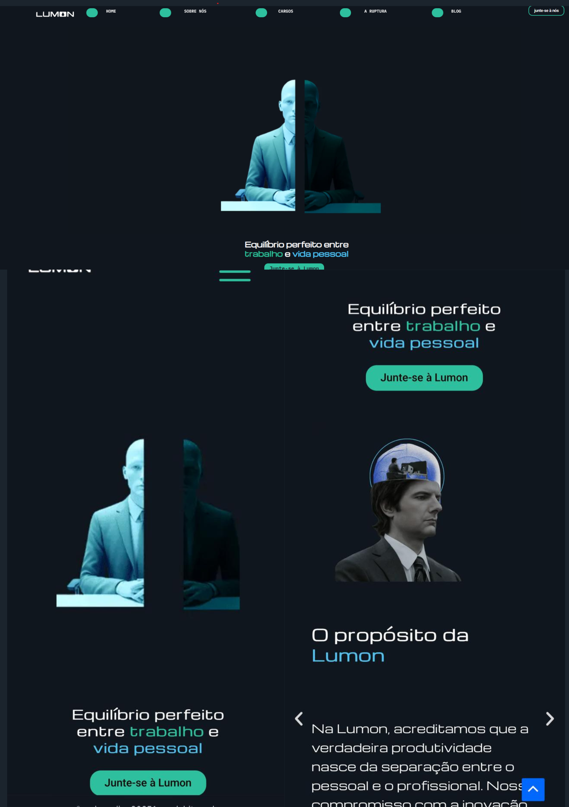

17.19.01_9071a8e0.jpg)
Sobre mim
Estudande de Sistemas da Informação apaixonada por tecnologias, inovação e dados. Adoro ler sempre que possível, principalmente sobre pensamentos/reflexões humanas. Crítica questionável do Letterboxd, fã de colagens, teatro e coisas que tragam inspiração de modo geral.
Hobbies Favoritos

.png)

.png)
Projetos Recentes
Fiz alguns projetos voltados para web inspirado no site da empresa da série Ruptura com lowcode( wordpress), além de usar html, java script e css para criação de um jogo estilo flappy bird com tema de Hora de Aventura, e a prototipação no figma de um ep com 10 telas para mobilidade sustentável com integração de bikes no Recife.
Juntamente a esses projetos, participei de alguns que ultilizaram (Python, Streamlit, basico de supabase, wordpress) não adicionados por questões de privacidade ;)
- 
-

-

Trailer "O projeto muito legal de fazer"
Ruptura é uma das minhas séries favoritas por mesclar tecnologias "distópicas" e modernas, com um estilo meio retro e misterioso. Afinal, como diriam " O trabalho é importante e misterioso". Por isso, fazer esse site para a companhia/seita fictícia da série "Lumon", foi uma ótima experiência pois me permitiu adentrar no universo da série com mais afinco, assim como unir meu gosto por tecnologia e audiovisual.
Review tecnologias
.png)
.png)
.png)
Reviews de algumas tecnologias que usei.